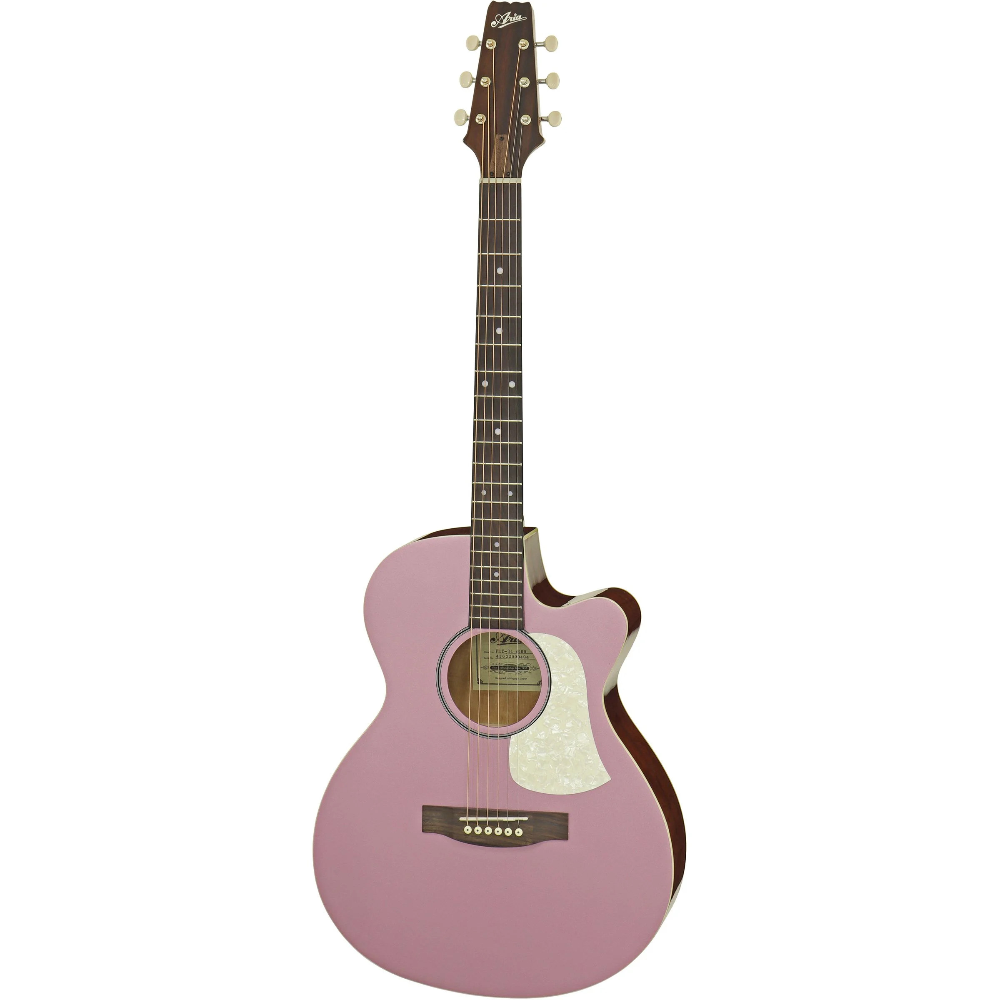

Klasik gitar tüm gitar türlerinin atasıdır.Diğer gitar türleri klasik gitarın çatısı altında türemiştir.Gövdesinin tam ortasında, “ses deliği” adı verilen yuvarlak bir boşluk bulunmaktadır. Çalışma prensibi ise, teller titreştiği anda, bu ses boşluğu içindeki havanın titreşerek buradan dışarıya ses vermesidir. Klasik gitar üzerinde, yukarıdan sayıldığında görülen ilk 3 tel, kalın teller olarak bilinir ve ipek üzerine sarılmış çeliktirler. Aşağıdaki 3 ince tel ise, naylondur.Aynı zamanda en uygun fiyatlı gitardır.21 perdeyle ses değiştirilir.Genellikle klasik ve flamenko müzik türlerinde kullanılmaktadır.

Görünüş itibariyle klasik gitarı andıran akustik gitarın gövdesi klasik gitardan biraz daha şişman ve basıktır. Daha dar bir sapa sahiptir.Yani teller birbirlerine klasik gitara nazaran daha Gitar Çeşitleri ve Özellikleri yakındır.20-21 perde klavyeye sahip olacak biçimde üretilir. Yine 6 telli olmasına karşın tüm telleri çeliktir. Bu sebeple daha tiz bir ses sahiptir. Klasik gitar gibi parmak yerine daha çok pena ile çalınır. En önemli özelliği tellerinin çelik olmasıdır. 4 adet sarı 2 adet beyaz çelik tel bulunur. Klasik gitarın çıkardığı sesten daha fazla ses çıkarmakta ve bazı tonlamaları daha iyi yapmaktadır.Akustik gitar, rock, blues ve pop müzik kültüründe görmekteyiz. Klasik gitar öğrenmek mi kolay yoksa akustik gitar mı derseniz; kesinlikle klasik gitar öğrenmek daha kolaydır. Akustik gitar ilk kullananlar için zor olabilir çünkü telleri ellerinizi kesecektir ve buna alışmak zaman almaktadır.
Elektro gitar ise akustik olmayan bir gövde üzerine 20-24 perde arasında ses değiştiriciye sahip bir enstrümandır. Akustik gitarın elektronik özellikler kazandırılmış hali olarak tanımlanabilir. Çok daha ince ve masif ağaçtan bir gövdesi olduğu için akustik olarak ses özelliği yoktur.Tellerden gelen ses manyetikler tarafından elektrik sinyaline dönüştürülüp anfiye yollanır ve yüksek ses elde edilir. Genellikle pena ile çalınır.Manyetiklerin titreşimi algılayabilmesi için çelik tel kullanılır.

Çalışma prensibi olarak elektro gitara benzemektedir. Sesi, normal gitarlardan 1 oktav daha kalındır.Çok daha kalın çelik telleri vardır.Kalın notaları seslendirmek için kullanılır. 19-21 perde olmasına karşın bass seslerin niteliği gereğince daha uzun bir skalaya sahiptir.Diğer gitarlardan en önemli Gitar Çeşitleri ve Özellikleri farkı genellikle 4 tele sahip olmasıdır. Değişik çeşitlerde de bas gitarlar bulunmaktadır, bunlar; 4 telli, 5 telli, 6 telli, 7 telli, 12 telli, perdesiz, ve kafasız.Diğer gitarlara göre bass gitar daha pahalıdır.
Gitar geçmişi 4000 yıla kadar uzanan eski ve soylu bir enstrümandır. Gitarın soyu hakkında bir çok teori vardır ve genelde ud’ un ve hatta eski Yunan çalgısı olan kithara dan geldiği iddia edilir. Ancak 1960 yılında Dr. Michael Kasha tarafından yapılan araştırma bu iddiaları çürütmüştür. Dr. Michael Kasha ‘nın araştırmasına göre ud ve gitar ortak ataları paylaşıyor olmalarına rağmen ayrı bir gelişimin sonucu ve gitarın evrimine bir katkısı olmamıştır. Ancak ters yöndeki etkisi de yadsınamaz – gitarın ataları Moors’un İspanya’ya getirdiği ud ‘un perdesizden perdeliye evriminde çok büyük etkisi olmuştur. Kithara teorisi için tek kanıt yunan sözcüğü “kithara” ile İspanyolca kelime “guitarra” arasındaki benzerlik. Gitarın tamamen farklı türde bir enstrüman olan kithara dan evrimleştiğini hayal etmek oldukça zor. Yani bir kare çerçeveli kucak harp ya da lir
Kare çerçeveli yedi telli bir kucak enstrümanı olan arpın eski İspanyolcada 4 telli gitara adını vermiş olması da ilginç bir geçiştir ayrıca. Dr. Michael Kasha Yunanlıların”kithara” ismini nereden edindikleri sorusu etrafında dönmektedir ve eski yunan kitharası yurtdışından getirildiğinde 4 telliydi. Dr. Kasha 4 telli çalgı olan chartar(sağda) ın Farsça adının hellenified olduğunu düşünmektedir.
Arkeologlar tarafından bilinen en eski telli enstrümanlar çanak arplar ve tanburlardır. Tarih öncesi insanlar çanak arpları gövde için kaplumbağa kabuğu ve su kabağı, sap için eğilmiş sopa ve teller için bağırsak ve ipek kullanıyorlardı. Dünyada ki pek çok müze Sümer, Babil ve Mısır uygarlıklarından kalma bir çok arp bulundurmaktadır. 2500-2000 li yıllarda daha gelişmiş arpler görülmeye başlandı. örneğin gösterişli bir şekilde oyulmuş 11 telli altın işlemeli bir arp Kraliçe Shub-Ad ‘in mezarında var. (sağda) Tanbur genellikle tahta yuvarlak veya kavisli gövdeli uzun saplı ve telli bir enstrüman olarak tanımlanır. Tanbur muhtemelen daha çok nota sığdırılabilsin diye kase arp ın boyun kısmı olarak geliştirildi. Mısır’daki mezar resimleri ve taş oymalar tanbur ve arp ın 3500-4000 yıl önce birlikte çalındığına şahitlik ediyor(flüt ve vurmalı çalgılar ile tanbur ve arp).